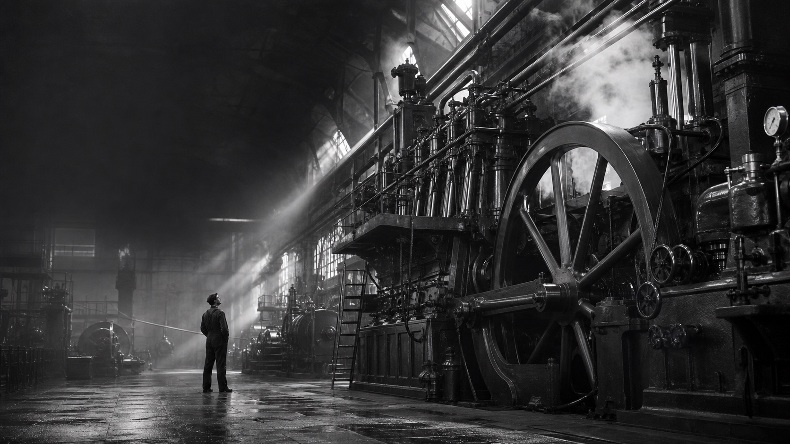
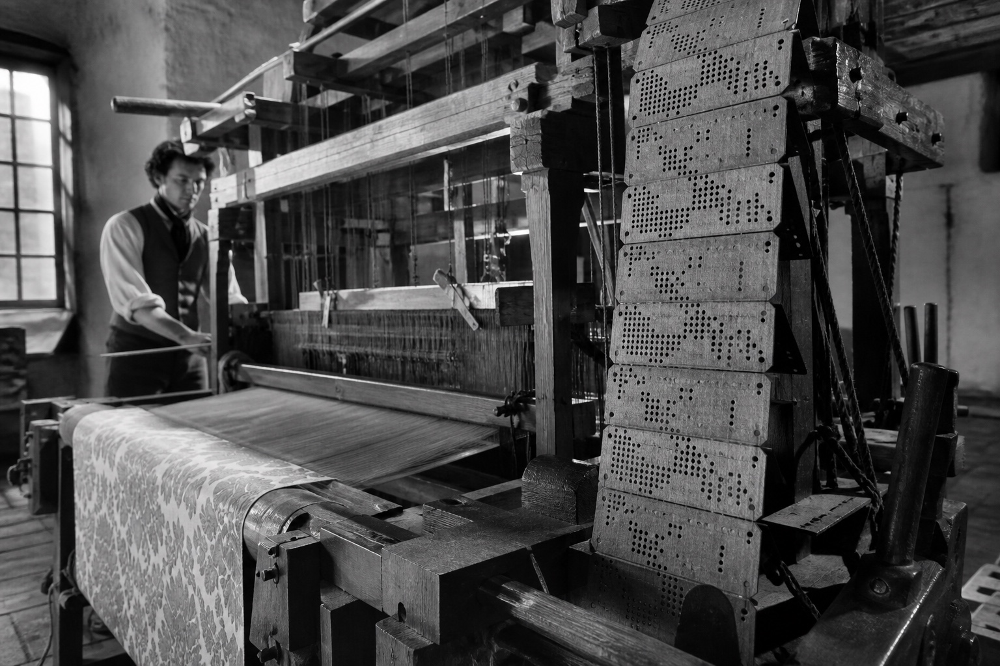
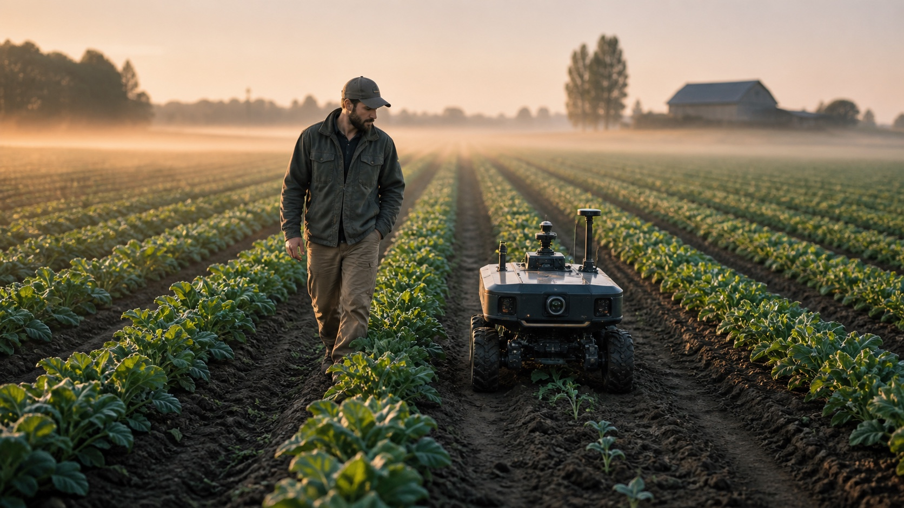
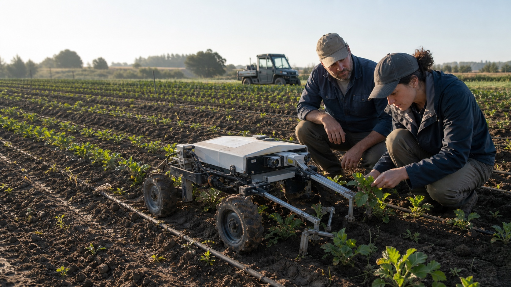
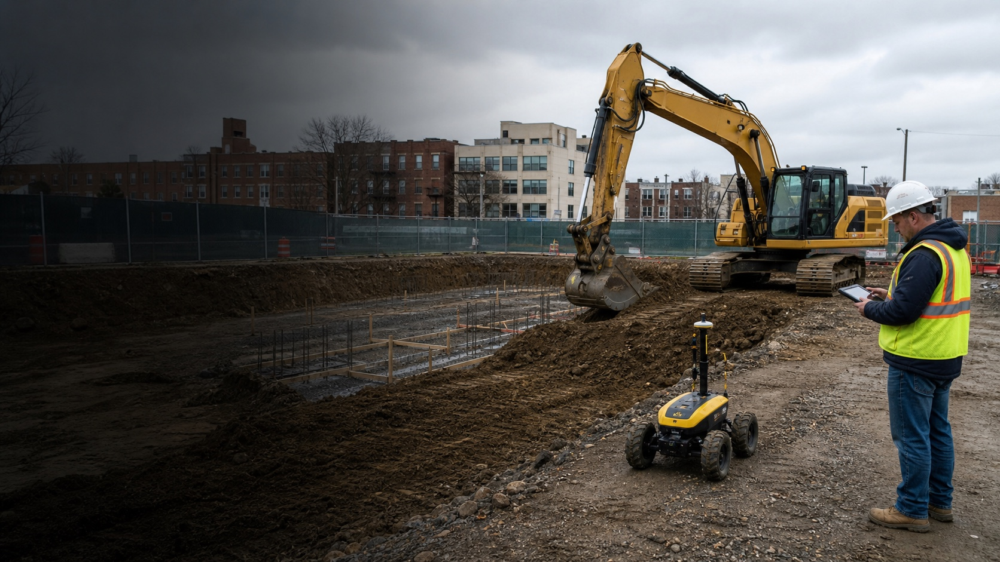
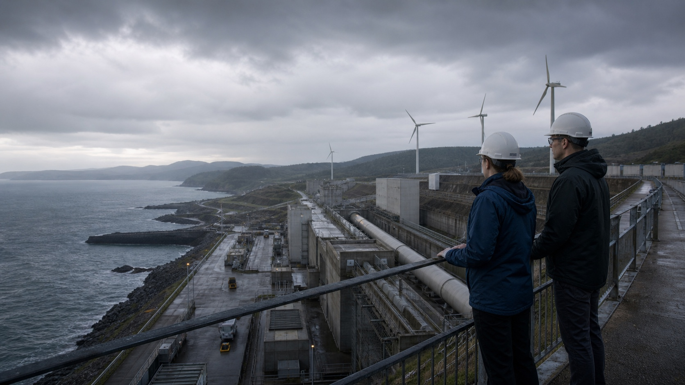

Bodies were no longer the only energy source.

Part 01 · History, mechanism, futures
AI is the latest chapter in an old story.
We build machines, then renegotiate what people are for.
Opening question
What are we actually automating now?
Original cinematic reconstruction · the machine age
Begin ↓An old ambition
First muscle. Then motion. Then instructions.
Work became repeatable and scalable.

Punched cards controlled physical action.
Technology turns parts of human skill into repeatable processes.
The moving bottleneck
Every wave automates one thing—and raises the value of another.
Design
Coordination
Interpretation
Trust
Goals · evidence · responsibility
Three modes
Rules, learning, and agency are different.
rules + input → outputA person specifies the procedure.
examples + error → parametersThe system learns a useful mapping.
goal + model + tools + feedback → actionsThe model chooses steps inside a controlled loop.
A working definition
AI infers how to turn inputs into outputs.
It does this in pursuit of an explicit or implicit objective.
AI is a family of systems.
The label does not imply consciousness, understanding, or autonomy.
Adapted from the OECD AI-system definition ↗
A compressed history
The field repeatedly changes its theory of intelligence.

- A question becomes a field
Turing, Dartmouth, and the language of “AI.”
- Symbols
Rules and structured knowledge.
- Statistics
Learn from data.
- Deep learning
Data + GPUs + large networks.
- Transformers
Attention and parallel training.
- Foundation models
Chat, tools, multimodality, agents.
Why deep learning “woke up”
The ideas matured. The conditions changed.
More examples.
More parallel calculation.
Better architectures and training.
Linear algebra, made small
A dot product is just a weighted score.
Our toy model scores three clues for each possible next word.
Context
The cat sat on the _____
2 grammar
1 common phrase
3 meaning
[1, 1, 1] · [2, 1, 3] = 6features · weights = score“mat” fits the grammar, the familiar phrase, and the situation.
Toy example: real models learn their own distributed features and repeat operations like this at enormous scale.
The basic LLM loop
Predict one token. Append it. Repeat.
Text becomes numbered chunks.
Numbers become positions in a learned space.
Layers mix context and score possibilities.
One token joins the context.
Thousands of local predictions can produce a coherent paragraph.
2017 · The Transformer
Each token asks: what else matters here?
Attention mixes information according to relevance—and enabled highly parallel training.
The animaldidn’t crossthe streetbecauseitwas tired.
To interpret “it,” the model can weight “the animal” more strongly than “the street.”Why it matteredcontext + parallelism + scale
Attention Is All You Need · 2017 ↗
November 30, 2022
The breakthrough people felt was a combination.
The interface made capability visible—and hid uncertainty behind fluent answers.
Introducing ChatGPT · 2022 ↗
Now · observed
An agent is a model inside a loop with tools.
It can choose steps, act, inspect the result, and continue—or ask a person.
Goal→Plan→Act→Observe↻
Digital tasks with tools, feedback, and checkable outputs.
Long chains, ambiguous goals, hidden state, and irreversible actions.
model + harness + tools + environment + permissions
Three signals already here
More senses. More tools. More contact with the world.
Voice
Conversation becomes continuous.
Evidence ↗Robotics
Models enter the physical loop.
Evidence ↗Science
Prediction becomes an instrument.
Evidence ↗A change of scale: intelligence enters the physical world


Farming · 2–5 years · medium confidence
Every plant becomes observable. Every intervention becomes precise.
Sense→Decide→Act→Learn
Spot weeds, disease, and water stress plant by plant.
Use fewer chemicals, less water, and less repetitive labor.
Give farmers continuous field-level intelligence.
Scenario visualization · prediction grounded in current precision agriculture
Build the physical world ↓
Construction · 3–10 years · medium-to-low confidence
A jobsite can become a coordinated learning system.
Read plans→See site→Coordinate→Check
Machines handle repeatable and hazardous operations.
Plans update against the real state of the site.
People set priorities, resolve exceptions, and own the outcome.
The promise: build faster, safer, and with less waste.
Scenario visualization · human-supervised autonomy
Accelerate discovery ↓
Science · 2–10 years · medium confidence
The laboratory itself begins to act like an agent.
Hypothesize→Design→Run→Measure→Revise
Run more experiments for every important question.
Connect literature, simulation, and physical measurement.
Let researchers spend more time choosing questions and interpreting surprises.
Discovery becomes a tighter conversation between imagination and evidence.
Scenario visualization · scientists remain responsible for validation
Zoom back out ↓
10+ years · low confidence · possibility
The exciting possibility is more ambitious human projects.
More hypotheses tested.
Safer, faster infrastructure.
Systems responsive to local conditions.
The shift: AI moves from answering questions to expanding what communities can notice, coordinate, build, and repair.
Scenario visualization · one possibility among many
Carry one idea ↓The future worth building
The point is not to remove people from the picture.
Start with problems worth solving.
Purpose, judgment, care, responsibility.
Evidence, feedback, reversibility.
Design distribution, not only capability.
It is to expand what people can notice, understand, build, discover, and repair.